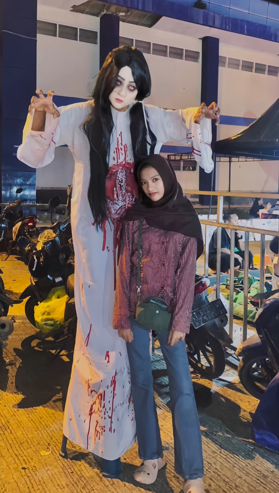

Selamat Datang di Website Saya
Tentang SayaHi, saya Najla Assofi Fadila. Saya adalah pelajar dari jurusan Teknik Komputer dan Jaringan.
Saya suka mencoba hal-hal yang belum saya tahu. Membuat website ini adalah salah satu pengalaman baru saya dalam membuat sebuah website.
Saya suka bermain futsal. Futsal adalah hobi saya sejak SMP.
Saya juga suka menari sebagai salah satu kegiatan yang saya sukai.
Website portfolio pribadi yang dibuat untuk memperkenalkan diri, jurusan, hobi, serta project yang saya kerjakan.
HTML • CSS • LaragonDigunakan untuk membuat struktur website.
Digunakan untuk mengatur tampilan website.
Digunakan untuk membuat website lebih interaktif.
Digunakan sebagai lingkungan server lokal.
Jika ingin menghubungi saya, silakan melalui kontak di bawah ini.